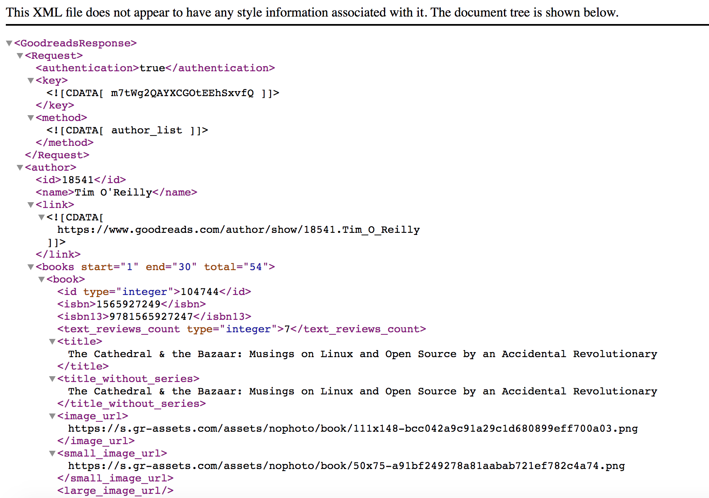

In order to start interacting with the API, we must first request a developer key here. We simply put in the application and company names and hit "Apply for a Developer Key."
Once a request for a developer key is made, we should receive both the key and secret strings. The key will be required for every request that is made to the API. The secret is only required when using the write API.
To make a call to the API, we simply send an HTTP request to one of the endpoints described here with our developer key as a parameter in the URL. The code snippet below illustrates this process as a simple Ajax request to the author list endpoint, which retrieves a list of books given an author ID. The example here retrieves a list of books for author Tim O'Reilly.
var XMLHttpRequest = require("xmlhttprequest").XMLHttpRequest;
var request = new XMLHttpRequest();
var api_call = "https://www.goodreads.com/author/list/18541?format=xml&key=YOUR_KEY";
request.open("GET", api_call, true);
request.addEventListener("load", function() {
if (request.status >= 200 && request.status < 400) {
response = request.responseText;
console.log(response);
} else console.log("Something went wrong " + request.statusText);
});
request.send(null);
At the time of writing, Goodreads doesn't allow cross-domain requests from browsers so the code above was run with Node in a terminal. Node doesn't support the native XMLHttpRequest object that's found in browsers but a wrapper is available for installation via NPM that provides identical functionality. The code above invokes this Node wrapper with the line var XMLHttpRequest = require("xmlhttprequest").XMLHttpRequest; .
The main request happens with the following lines:
var request = new XMLHttpRequest();
var api_call = "https://www.goodreads.com/author/list/18541?format=xml&key=YOUR_KEY";
request.open("GET", api_call, true);
This uses the Node HTTP request wrapper to submit a GET request to the API URL stored in "api_call." The "true" parameter in the "open" method coupled with the remaining lines of code ensure that the request can be done asynchronously.
The XML that we get back from the example call to the API for Tim O'Reilly's books looks like the image below:

This is exactly what we get back from the Ajax call but in text form. In order to properly traverse the XML hierarchy, we need to parse the text into an object that we can navigate with Javascript. There is a package in Node that allows us to do this. The package is called xml2js and it can be installed as usual with NPM.
The code below demonstrates the same call as earlier but with the added parsing piece.
var XMLHttpRequest = require("xmlhttprequest").XMLHttpRequest;
var parseString = require('xml2js').parseString;
var request = new XMLHttpRequest();
var api_call = "https://www.goodreads.com/author/list/18541?format=xml&key=YOUR_KEY";
request.open("GET", api_call, true);
request.addEventListener("load", function() {
if (request.status >= 200 && request.status < 400) {
response = request.responseText;
var xml = parseString(response, function(err,result){
console.log(result.GoodreadsResponse.author[0].books[0].book);
});
} else console.log("Something went wrong " + request.statusText);
});
request.send(null);
The additions to pay attention to are including the parsing function from the xml2js package with var parseString = require('xml2js').parseString;, var xml = parseString(response, function(err,result){} which is the call to the parsing function with the XML text response, and finally console.log(result.GoodreadsResponse.author[0].books[0].book); which prints out all of Tim O'Reilly's books to the console.
Traversing the object is fairly straightforward as all the levels in the XML hierarchy are stored as arrays of objects. We can walk down the levels by providing an index and calling the interior key corresponding to the data we're interested in. For example, books[0].book in the previous code snippet will get the list of books.